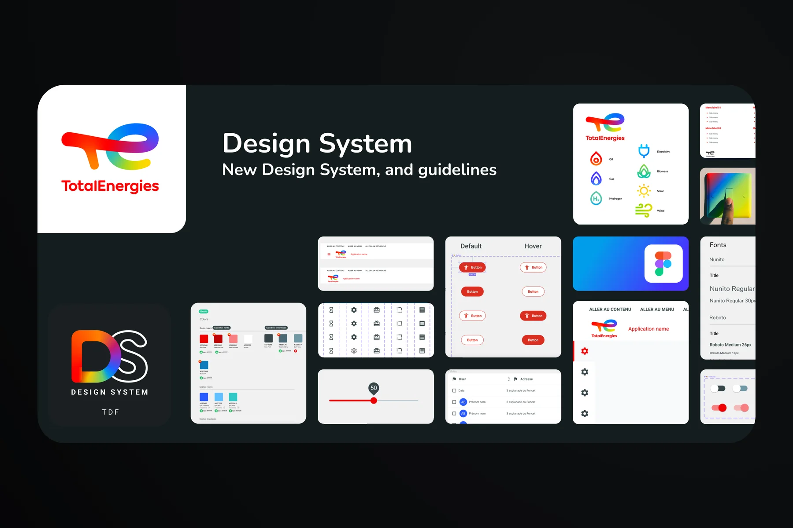

Un Design System pour 50 produits, une seule voix.
- Rôle
- Design System Manager
- Périmètre
- Design System global, standards UI/UX
- Équipe
- 20+ designers & consultants

Problématique
Créer un Design System unifié pour garantir la cohérence et la scalabilité de plus de 50 produits digitaux, dans un contexte d’innovation rapide et de transformation interne.
Au sein de la Total Digital Factory, j’ai piloté la création du Design System global destiné à unifier l’ensemble des produits digitaux du groupe. Déployé sur plus de 50 projets, il garantit la cohérence visuelle et fonctionnelle à travers les filiales et feature teams de TotalEnergies.
J’ai coordonné une équipe de plus de 20 designers et consultants, en accompagnant la mise en place des standards UI/UX et des bonnes pratiques produit — pour harmoniser les processus de conception, faciliter la collaboration et assurer une adoption fluide du Design System à chaque étape des projets.
{{cur.title}}
{{cur.desc}}